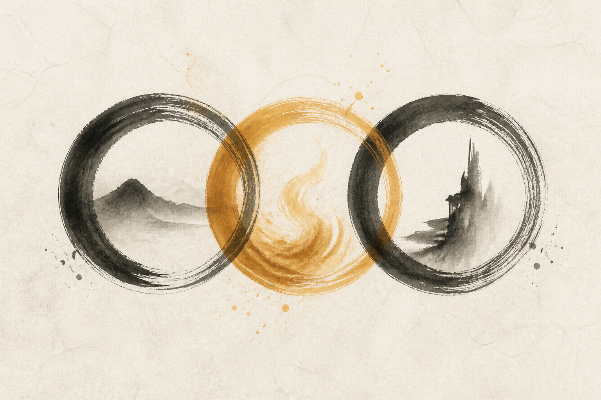

思维方式
人生态度与人格方向。可为负值。方向错了，能力与热情越大，破坏越大。
KAZUO INAMORI · 稻盛和夫
一本关于「作为人，何谓正确」的人生哲学。稻盛和夫以京瓷、KDDI 与日航的实践，把经营与修行连在一起： 用正向思维方式点燃热情，把工作当作磨炼心性的道场，以利他之心走向充实的人生。

《活法》要回答的不是「如何赚更多钱」，而是：人为什么活着？怎样活才不枉此生？ 稻盛认为，人生的目的在于提高心性、磨炼灵魂。成败荣辱会消散，留下的是人格与灵魂的纯度。
因此，他反复强调一个朴素而锋利的判断基准：
「作为人，何谓正确？」
诚实、不骗人、不贪心、不给人添麻烦、同情他人、乐观——这些从小被教导的美德，正是经营人生与事业的原点。

人生·工作的结果 = 思维方式 × 热情 × 能力
人生态度与人格方向。可为负值。方向错了，能力与热情越大，破坏越大。
持续燃烧的愿望与投入。睡也想、醒也好，把平凡努力推到非凡。
才智与技能。重要，但不是决定项；可用热情补足，却补不了负向思维。
把哲学落到每一天，稻盛给出可反复操练的「六项精进」：
稻盛反对把工作仅仅看作谋生手段。他认为：全神贯注于工作，能磨去任性与杂念， 培养耐心、集中力与责任感，最终改变人格。
「自燃型」的人——能自己点燃热情——比等待别人点燃的「可燃型」更接近非凡。 持续努力到「神灵也肯伸手相助」的地步，机会才会向你靠近。

事业扩张、创业抉择、危机应对，稻盛常用同一把尺子：这件事是否符合「作为人的正确」？ 动机是否至善？是否夹杂私心？
利他不是口号，而是经营与人生的战略：为员工、客户与社会着想，长期反而更能成就事业。 日航重建等实践，也被他用来印证「哲学可以落地」。
一句话收束全书：以正确的思维方式，燃烧热情，磨炼能力；在利他中成就事业，在事业中磨炼灵魂。